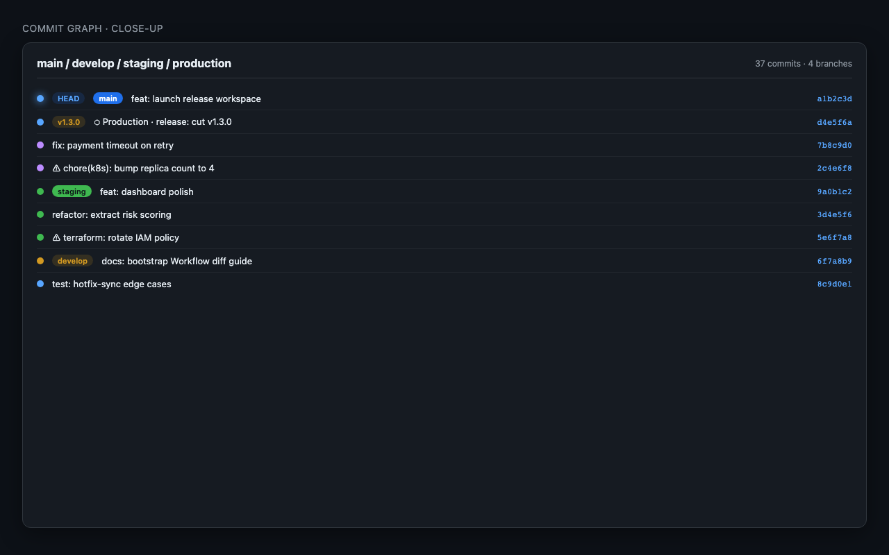
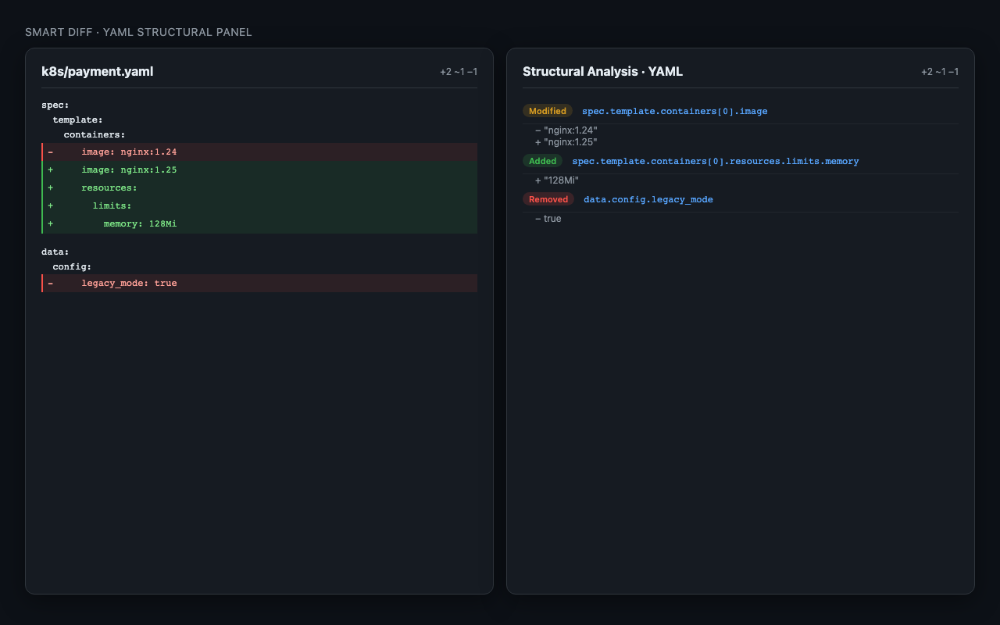
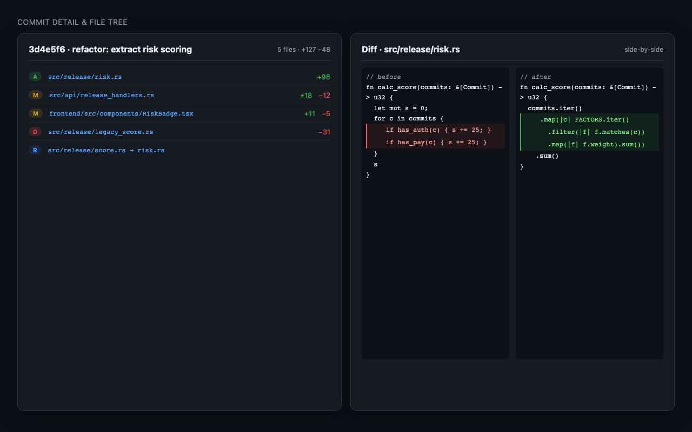
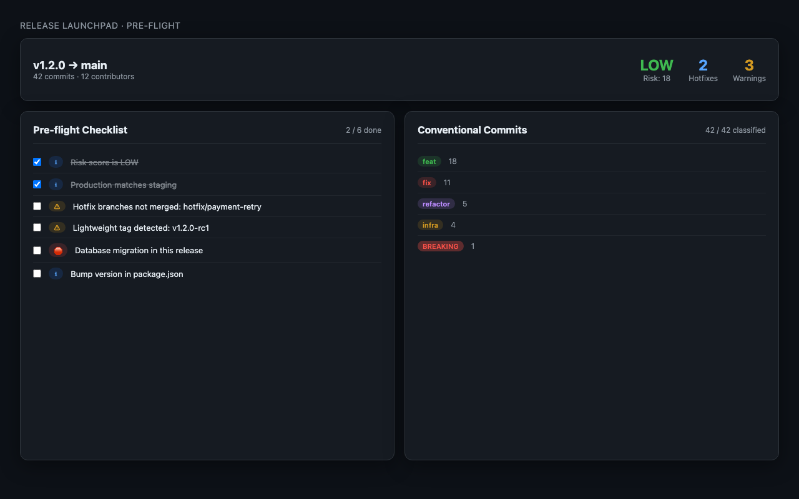
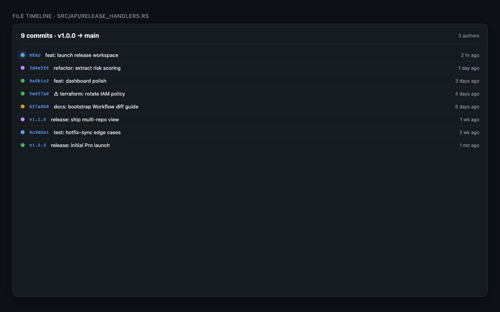
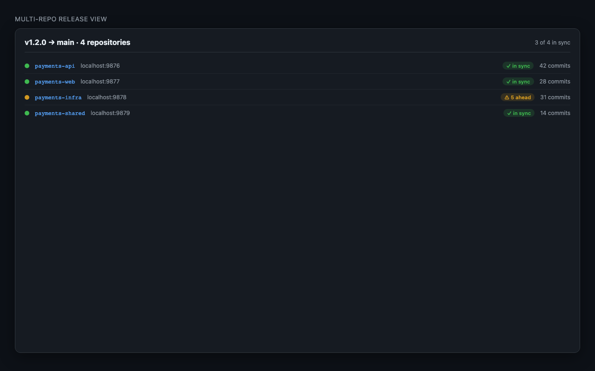
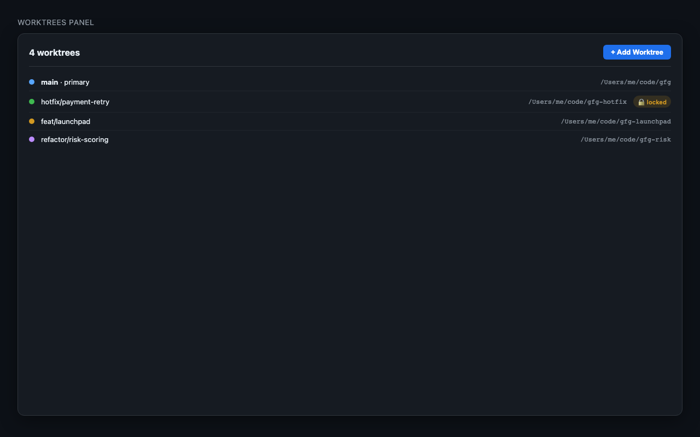
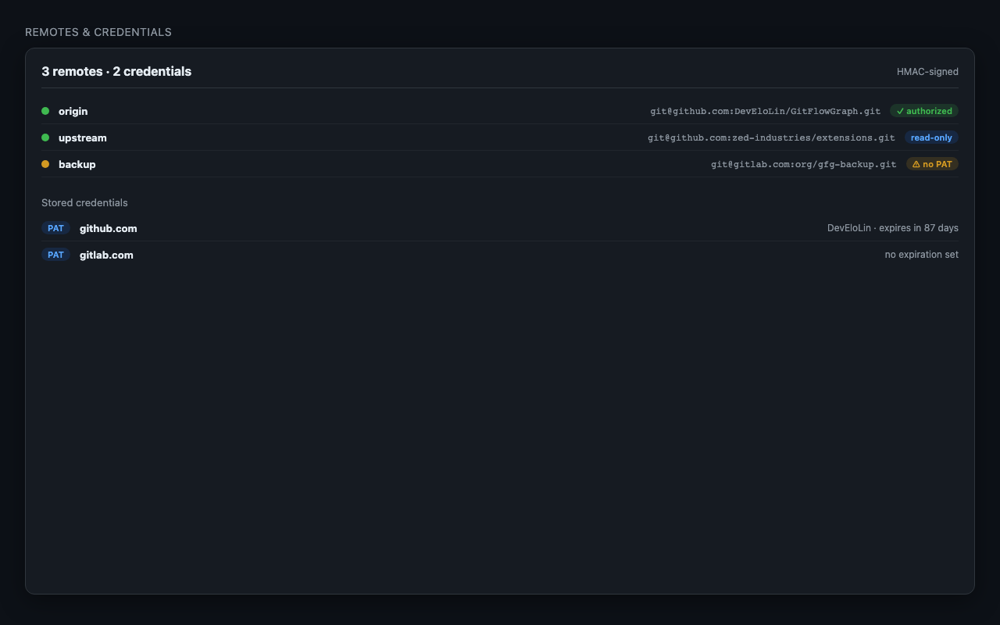

Interactive commit graph, three-mode Smart Diff, release workspace and a guided Hotfix Wizard — all embedded in Zed. No editor switching, no cloud, ever.
Built for engineers who live in the editor — answers, not context switches.
Render the full history as an interactive multi-lane graph: SVG curves, glowing HEAD ring, branch / tag / environment badges.

Stop reading walls of text. Smart Diff understands the structure of your files and reports what actually changed, grouped by the work you are doing.

Click any commit to see full metadata, change list and diff in a side panel — never leave the graph.

A six-tab dashboard built from your Git history alone — no external integrations needed.

Type a file path. See every commit that touched it. Click any two commits — get the side-by-side diff for that exact pair.

Run one runtime per repository, then aggregate ahead / behind across all of them in a single table. Built for microservices and split-repo releases.

Manage parallel checkouts and switch repository contexts in seconds — no terminal hopping, no stash juggling.

A first-class credential manager for hosted Git platforms — fetch and push without ever leaving the editor.

Press ⌘⇧X (macOS) or Ctrl+Shift+X to open the Extensions panel.
Type GitFlowGraph and click Install.
Run /gitflowgraph from the AI panel, then open localhost:9876.